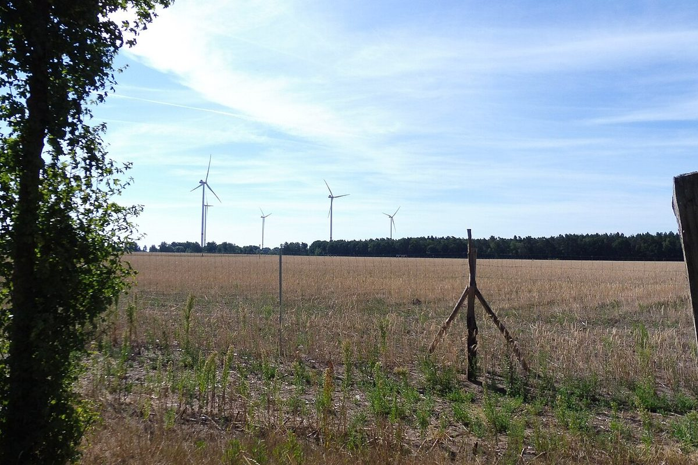

독일 메클렌부르크포어포메른 연정 구상, 풍력·대형 태양광 이웃 주민 전력망 이용료 면제 추진

풍력단지 2km·대형 태양광 500m 이내 주민 대상…세부 시행 방법은 미정, 아직 연정 협상 중 구상
독일 메클렌부르크포어포메른주에서 차기 정부를 꾸릴 것으로 보이는 사민당·좌파당·녹색당 3당이 풍력·태양광 시설 이웃 주민의 전력망 이용료를 면제하는 방안을 연정 구상에 담았다. 풍력단지에서 2km 안, 대형 태양광 시설에서 500m 안에 사는 주민이 대상이라고 마누엘라 슈베지히 주총리(사민당)가 경제 분야 구상을 설명하며 밝혔다. 다만 연정 협상 중인 구상이어서 세부 시행 방법은 정해지지 않았다. 녹색당 원내대표 클라우디아 뮐러는 "그곳의 망 이용료가 완전히 폐지되도록 힘쓰겠다"고 말했고, 시민에너지기금을 두면 재생에너지 입지에 대한 주민 수용성이 높아질 것으로 기대했다. 풍력단지 주민이 사업자 이익에 참여하도록 한 기존 시민참여법은 계속 유지된다. 연정은 값싼 녹색 전기로 산업을 유치하고, 전기는 현지에서 쓰며 북쪽에서 남쪽으로 보내지 않는다는 방침도 함께 내놨다.
시민에너지 관점
풍력 2km, 태양광 500m라는 거리 기준으로 혜택 대상을 정한 점이 눈에 띈다. 이용료 면제분을 다른 이용자가 메우게 되는 것 아니냐는 우려가 나올 수 있지만, 이 구상은 시행 방법이 열려 있어 재원 설계가 관건으로 남아 있다. 독일은 요금 혜택에 더해 사업 이익에 주민이 참여하는 법을 계속 두어, 입지 주민이 구경꾼이 아니라 몫을 가진 당사자가 되도록 하려 한다. 발전소가 지역에 받아들여지려면 요금과 이익이 이웃 주민에게 돌아와야 하니, 한국의 지자체와 국회도 입지 주민의 몫을 제도로 정하는 논의를 서둘러야 한다.
출처: n-tv(dpa 지역 배포) 2026-11-06 dpa/mv(기자명 없음) 원문 보기
独メクレンブルク＝フォアポンメルン州の連立構想、風力・大規模太陽光の近隣住民の送電網利用料を免除へ
風力団地から2km・大規模太陽光から500m以内の住民が対象…具体的な実施方法は未定、連立協議中の構想
ドイツのメクレンブルク＝フォアポンメルン州で次期政権を担う見通しの社会民主党・左派党・緑の党の3党が、風力・太陽光施設の近隣住民の送電網利用料を免除する案を連立構想に盛り込んだ。風力団地から2km以内、大規模太陽光施設から500m以内に住む住民が対象だと、マヌエラ・シュヴェーズィヒ州首相（社会民主党）が経済分野の構想を説明する中で述べた。ただし連立協議中の構想であり、具体的な実施方法は決まっていない。緑の党の院内総務クラウディア・ミュラー氏は「その地域の網利用料が完全に廃止されるよう努める」と語り、市民エネルギー基金を設ければ再生可能エネルギーの立地に対する住民の受容性が高まると期待を示した。風力団地の住民が事業者の利益に参加できるようにした既存の市民参加法も引き続き維持される。連立は、安価なグリーン電力で産業を誘致することや、電気は現地で使い、北から南へは送らないという方針も併せて示した。
市民エネルギーの視点
風力2km、太陽光500mという距離の基準で恩恵の対象を決めた点が目を引く。利用料の免除分を他の利用者が補うことになるのではという懸念も出得るが、この構想は実施方法が未定で、財源の設計が焦点として残っている。ドイツは料金面の恩恵に加えて、事業利益に住民が参加する法律も維持し、立地地域の住民が傍観者ではなく持ち分を持つ当事者になるようにしようとしている。発電所が地域に受け入れられるには、料金と利益が近隣住民に還元されなければならない。韓国の自治体と国会も、立地住民の取り分を制度で定める議論を急ぐべきだ。
出典: n-tv(dpa 지역 배포) 2026-11-06 dpa/mv (no byline) 原文を読む
德国梅克伦堡-前波美拉尼亚州联合执政构想：拟免除风电、大型光伏周边居民的电网使用费
对象为风电场2公里、大型光伏500米以内的居民…具体实施办法未定，仍是联合执政谈判中的构想
德国梅克伦堡-前波美拉尼亚州预计将组建下届政府的社民党、左翼党和绿党三党，在联合执政构想中提出，免除风电、光伏设施周边居民的电网使用费。州总理曼努埃拉·施韦西（社民党）介绍经济领域构想时表示，住在风电场2公里以内、大型光伏设施500米以内的居民将适用。不过这仍是联合执政谈判中的构想，具体实施办法尚未确定。绿党议会党团主席克劳迪娅·米勒说，将努力让当地的电网使用费"完全取消"，并期待设立公民能源基金，提高居民对可再生能源选址的接受度。让风电场居民分享企业收益的现行公民参与法将继续保留。执政三党还表示，要以廉价绿电吸引产业，电力就地使用，不再由北向南输送。
市民能源视角
以风电2公里、光伏500米的距离标准来划定受益对象，这一点值得注意。有人可能担心免除的费用会由其他用户来补，但这一构想的实施办法尚未确定，资金如何设计仍是关键。德国在电费优惠之外继续保留让居民分享项目收益的法律，目的是让选址地居民不再是旁观者，而是持有份额的当事人。电站要被当地接受，电费优惠和收益就必须回到周边居民手中，韩国的地方政府和国会也应尽快讨论如何以制度确定选址居民的份额。
来源: n-tv(dpa 지역 배포) 2026-11-06 dpa/mv(기자명 없음) 查看原文
Mecklenburg-Vorpommern coalition plan would waive grid fees for neighbors of wind and large solar parks
Residents within 2 km of wind farms and 500 m of large solar plants targeted; details open, still a proposal in coalition talks
Three parties expected to form the next government in Germany's Mecklenburg-Vorpommern, the Social Democrats, the Left and the Greens, have put a plan in their coalition proposals to waive grid fees for people living near wind and solar installations. Residents within 2 km of a wind farm or 500 m of a large solar plant would qualify, Minister-President Manuela Schwesig (SPD) said as she presented the economic part of the plans. The idea is still under coalition negotiation, and how it would work in detail has not been settled. Greens parliamentary leader Claudia Müller said she would push to "completely abolish" grid fees there, and she hopes a citizen energy fund will make residents more accepting of renewable projects. The existing citizen participation law, which lets wind-farm neighbors share in operators' profits, will stay in place. The coalition also said it wants cheap green power to attract industry and that energy should be used locally rather than sent from north to south.
Citizen Energy View
The plan sets eligibility by distance, 2 km from wind and 500 m from solar. Critics may ask whether other customers would cover the waived fees, but the method is still open, so how the money is found remains the key design question. Germany is keeping a law that lets neighbors share in project profits alongside the fee relief, aiming to make host communities stakeholders rather than onlookers. Power plants are accepted locally only when bill savings and profits reach the people next door, so Korean local governments and the National Assembly should move quickly to discuss setting host residents' share in law.
Source: n-tv(dpa 지역 배포) 2026-11-06 dpa/mv (no byline) Read the original